Deconstructing programming through critical software
Tomas Petricek, Charles University, Prague

Criticality
Architecture and software
House VI (1975) - Peter Eisenman
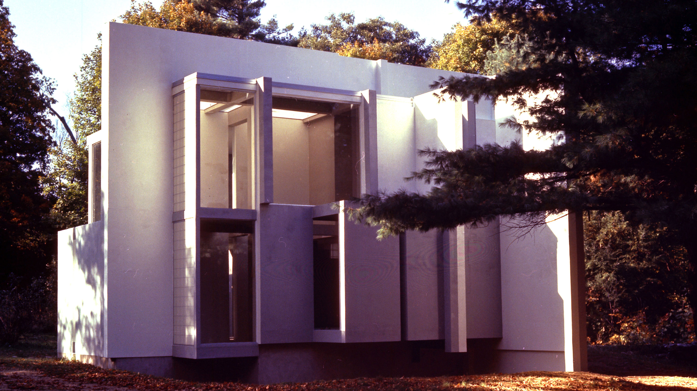
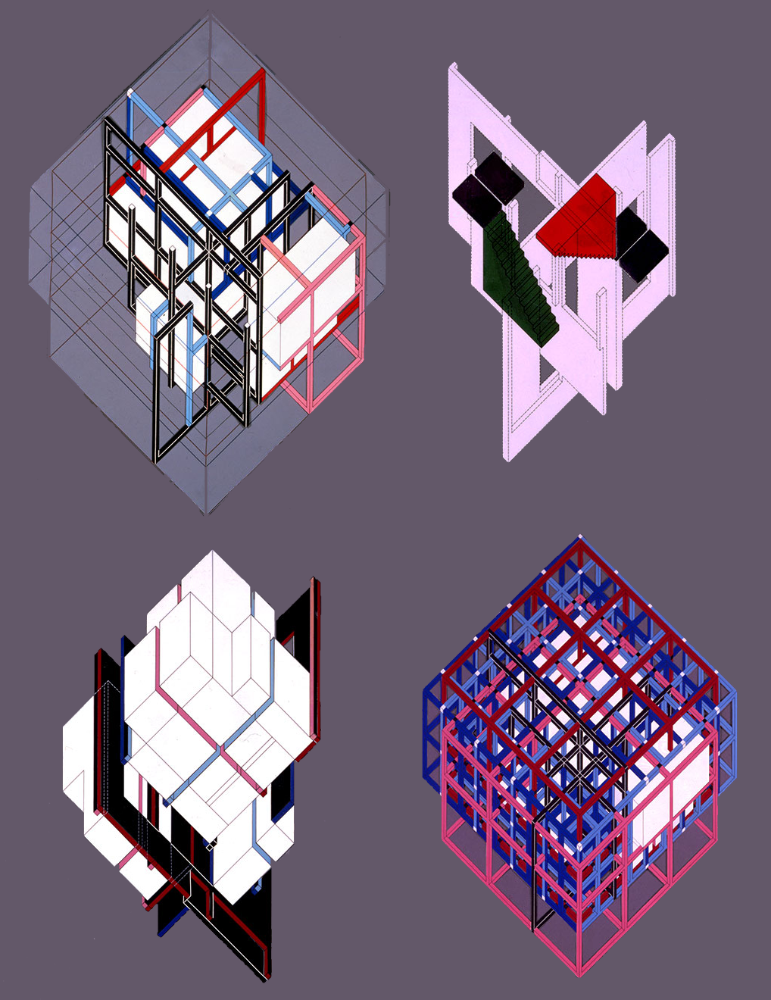
Structure
Formal manipulation of primitive structures
What is the essence of architecture?
Does not reveal programmatic and technical requirements
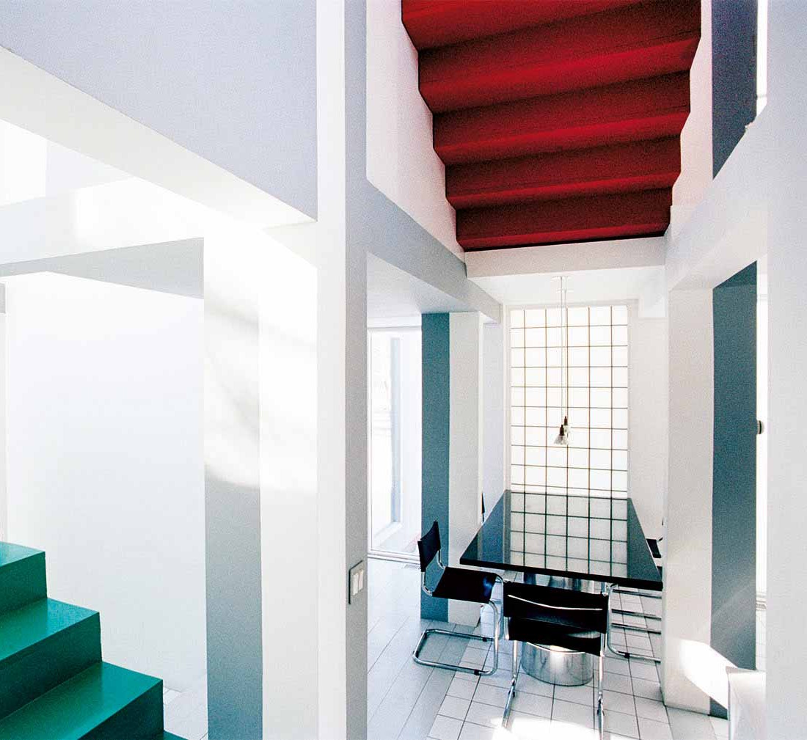
Function
Attacks the concept of occupation as given
Disrupting domestic mindlessness
Most of us adapt to
other people's houses
Experience does not
lead to mental image
Critical architecture and software
-
Disrupting domestic mindlessness
Everyday use of software we no longer see -
Experience does not lead to mental image
Thinking using established software patterns -
Manipulation latent in architecture
In what ways software controls what we do -
Adapting to other people's houses
Academics trying to use Sharepoint or Teams
Low-Tech Magazine
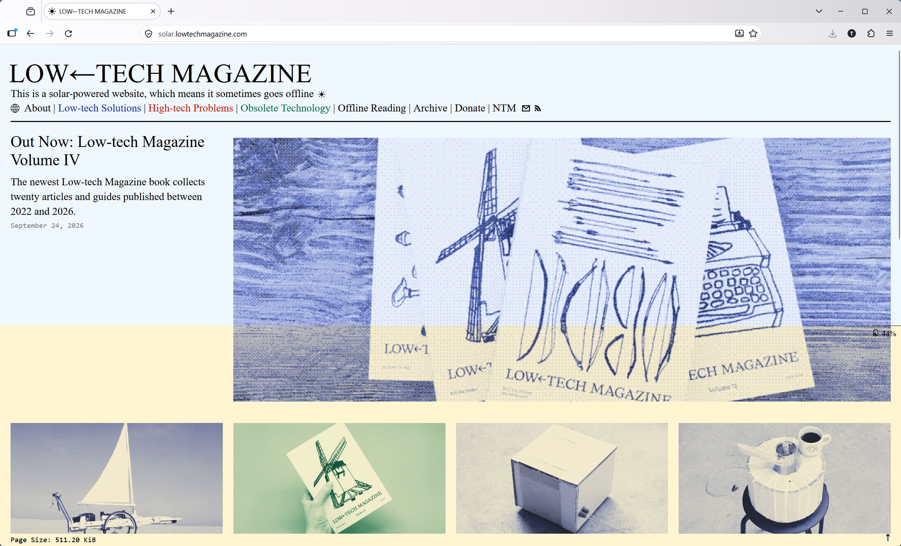
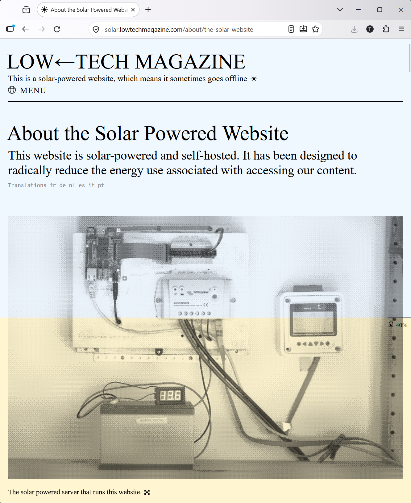
Low-Tech Magazine
Disrupting mindlessness
Black and white images
Offline in bad weather
Questioning assumptions
Climate impact of tech
Reliance on corporations
99.999 availability
Two uses of architecture
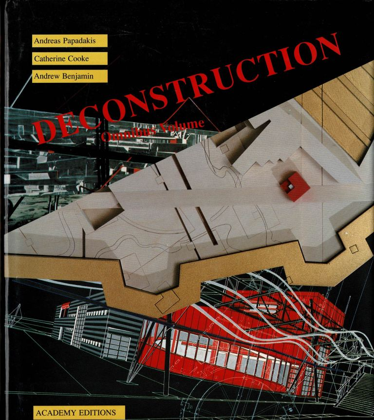
Critical methodology
- Self-critical reflective language
- Buildings, plans, projects
- Integrated in practice of architecture
Analogy with software
- Beyond software architecture
- Space, abstraction, structure
- Form and function
Space
Navigating in software
How we navigate program space?
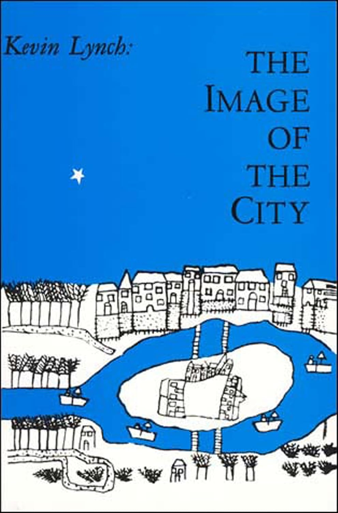
Space in a city
- Landmarks provide a reference point
- Districts make spaces identifiable
- Edges and paths control movement
Navigating in software
- Central entities in code
- Program execution and code references
- Are there identifiable districts?
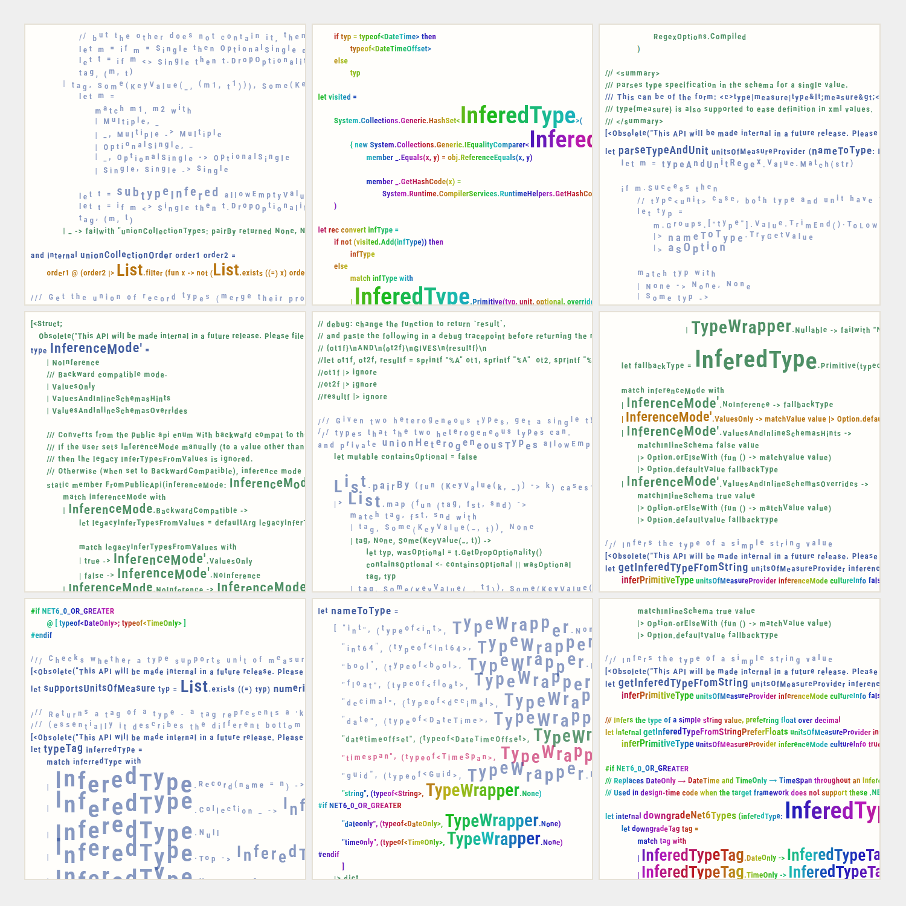
Code districts
Consistent coding style hurts navigation!
Old code decays
Code from the same
era looks similar
Important concepts become visible landmarks
Space
In architecture and software
-
Geometric patterns in cities and software?
Abstract spreadsheet space, line numbers in BASIC -
Vague spaces with undetermined meaning
Padding bytes in memory, module boundaries -
Space as an infrastructure
Isolated apps vs. systems living in a substrate
Function
Form follows function
Form follows function?
Ultimately, the 'functionalist' sign differed little from its classical counterpart..
Shapes were derived not from function itself, but from other disciplinary references (...) in order to suggest a functional meaning.
Form follows function?
Product listing with filtering and sorting
Mindless pattern
Controls uses
Design monopoly
Function is data collection anyway
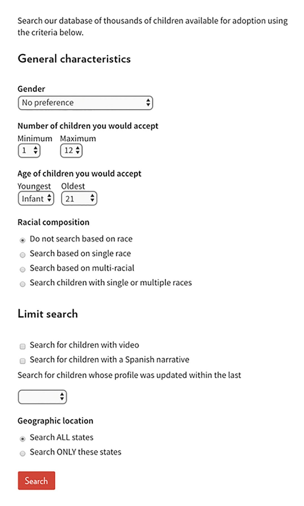
Classified children:
A critical analysis of the digital interfaces and representations that mediate adoption in the United States (Higgins, 2023)
Adoption listings mindlessly adopts the software pattern!
Disrupting the product listing
Listing as a maze
Inconvenience
Let the user get lost
Criticality
Question rationality
Function
Unironical software
What and how
Critical software
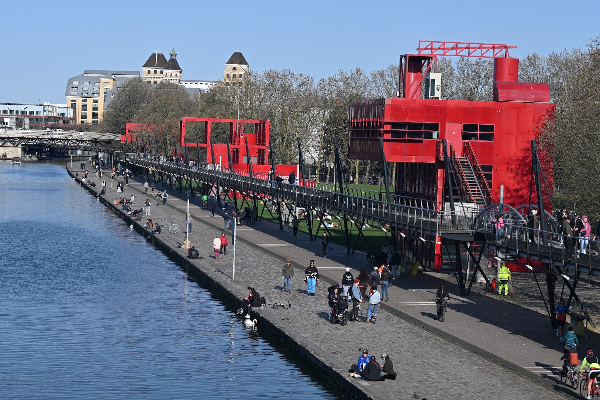
Parc La Villette
Deconstructing the design process
Planes, lines and points
Attacking the
opacity of software
Reveal what is it
made of and how?
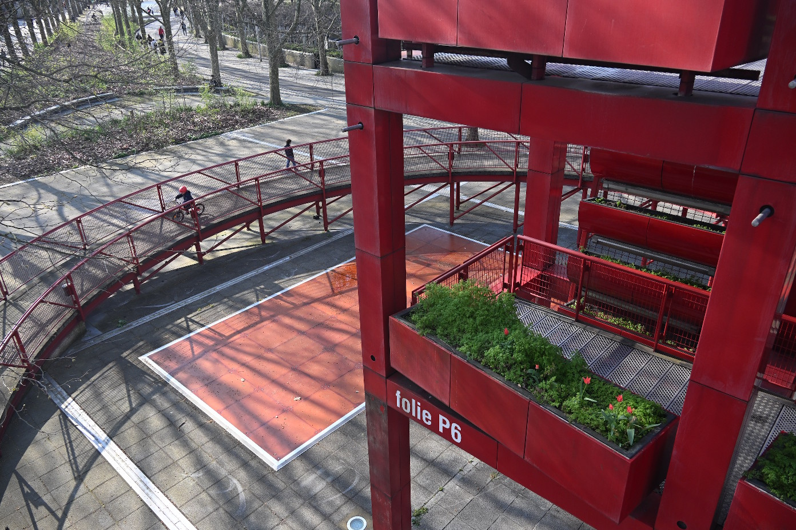
Follies
Deconstructed cube structures in a grid
No a priori function
Use later and flexible
Questioning the function of software
Avoid narrow specifications?
Rhetorical devices
Creating critical software
- Inconvenience - Harder to use
- Humour - Projects for fun
- Irony - Revealing flaws
- Exaggeration - Show absurdity
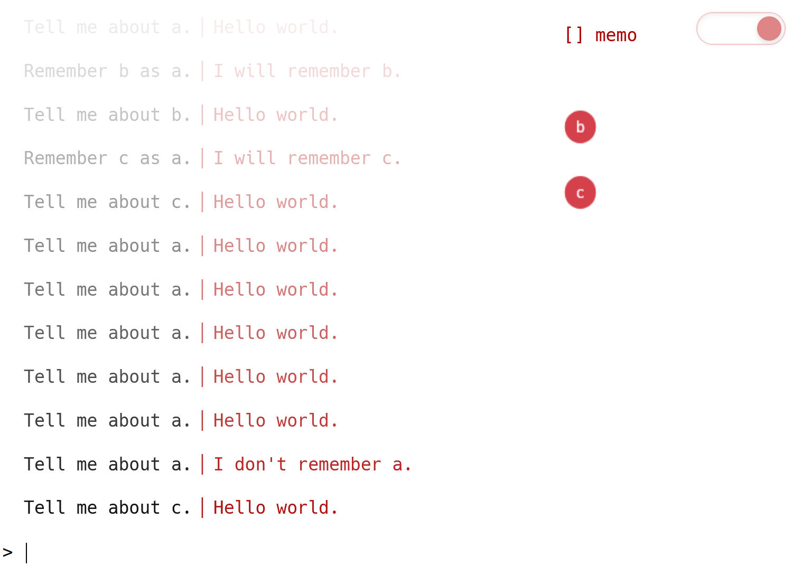
Esoteric languages
Employ humour, inconvenience and exaggeration
memo[] language
- space and scale
- 12 lines of code
- scroll to forget
Conclusion
Deconstructing programming
Deconstructing programming
-
Software needs more questioning!
Critique from within engages the community? -
Learning from critical architecture
Deconstructive plans, parks, folies, monuments... -
Work in progress... what to do next?
Read more at tomasp.net/architecture
Tomas Petricek, Charles University, Prague
tomas@tomasp.net | @tomasp.net